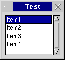
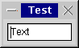
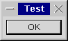
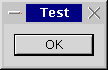

クラス: wxSizer, wxGridSizer, wxFlexGridSizer, wxBoxSizer, wxStaticBoxSizer, CreateButtonSizer
wxWidgets のクラス階層における wxSizer クラスと、その子孫クラスによって代表されるサイザーは、wxWidgets においてダイアログ内のコントロールのレイアウトを決定するための選択法になりました。なぜなら、サイザーによって、各コントロールのサイズやスタイルの違いを考慮しつつ、プラットフォームに依存しない、視覚的に魅力的なダイアログを作ることができるためです。wxWidgets のオリジナルのダイアログエディタと異なり、wxDesigner、DialogBlocks、XRCed、wxWorkshop などのエディタはもっぱらサイザーのみに基づいてダイアログを作成し、事実上、プラットフォーム非依存のレイアウトを妥協なしに作ることをユーザに強制します。
次の章ではサイザーを用いて何ができるのかを説明します。続く章では個々のサイザークラスを用いてプログラムを書く方法について簡潔に説明します。
サイザーに基づいたダイアログを作成可能な wxWidgets の新しいリソースシステムについての情報は XML に基づくリソースシステムの概要 を参照してください。
サイザーの背後にある考え方
wxBoxSizer を用いたプログラミング
wxGridSizer を用いたプログラミング
wxFlexGridSizer を用いたプログラミング
wxStaticBoxSizer を用いたプログラミング
CreateButtonSizer
wxWidgets のサイザーで用いられているレイアウトアルゴリズムは Java の AWT や GTK ツールキット、 Qt ツールキットといった他の GUI ツールキットで用いられているものと密接に関わりがあります。このアルゴリズムは、必要最小限のサイズを通知し、親ウィンドウのサイズが変化した場合にそれにあわせてサイズを変更することのできる、個別のサブウィンドウという考えに基づいています。これはほどんどの場合で、プログラマがダイアログの初期サイズを設定するのではなく、代わりにダイアログをサイザーに割り当て、サイザーが推奨サイズを問い合わせることを意味します。このサイザーは順に子コントロール (通常のウィンドウや空白スペース、他のサイザーかもしれません) に対して問い合わせを行うため、サイザーの階層が構築されることになります。wxSizer は wxWindow を継承していないため、タブ順に干渉することがなく、実際のウィンドウと比較するとほとんどリソースを必要としません。
サイザーが wxWidgets に非常に適している理由は、すべてのコントロールが自身の最小サイズを通知し、このアルゴリズムが異なるプラットフォームのフォントサイズやウィンドウ (ダイアログのアイテム) のサイズの違いを問題なく取り扱うことができるためです。例えば、標準フォントが Linux/GTK ウィジェット全体のデザインと同じように Windows の場合より多くのスペースを必要とする場合、ダイアログの初期サイズは Windows より Linux/GTK の方が自動的に大きくなります。
今のところ、wxWidgets では 5 種類のサイザーが利用可能です。それぞれ、特定の方法でダイアログ内にコントロールを配置したり、コントロール (や他のサイザー) をスタティックボックスで囲むといった特別な処理を行ったりします。これらのサイザーについて、ひとつずつ説明していきます。サイザーをプログラムで使用する方法については サイザーを用いたプログラミング を参照してください。
サイザーはすべてコンテナです。つまり、ひとつ (または複数) のダイアログアイテムを内部に配置するために使用されます。時々、そのようなアイテムをサイザーの子と呼びます。個々のサイザーがどのように子コントロールを配置するかによらず、子コントロールはすべていくつかの共通機能を持ちます:
最小サイズ : 通常、この最小サイズはコントロールの初期サイズと同じであり、コントロールのコンストラクタの wxSize フィールドに明示的に設定されるか、(普通は高さや幅に -1 を設定することで) wxWidgets によって計算されます。(チェックボックスなどの) いくつかのコントロールのみが自身のサイズを計算できるのに対し、(リストボックスなどの) 他のコントロールはデフォルトの幅や高さを持たないため、明示的にサイズを指定する必要がある点に注意してください。(単一行テキストコントロールなど) いくつかのコントロールでは自身の高さを計算できても、幅を計算することができません。


ボーダー : ボーダーは単なる空白スペースで、ダイアログ内でコントロール同士を分けるために使用します。ボーダーは全周、またはコントロールの上と下のみといった任意の組み合わせで指定できます。ボーダーの太さは必ず明示的に指定する必要があり、デフォルトでは 5 ポイントです。以下の例では単一のコントロール (ボタン) を持つダイアログについて、ボタンのまわりのボーダーを 0、5、10 ピクセルに設定しています。


アライメント : ダイアログアイテムに対して、最小サイズとボーダーのスペースよりも多くのスペースを与えることはよくあります。個々のコントロールに使用されたフラグに応じて空きスペースを満たす、つまり、最小サイズ以上に伸長させるか、空きスペースの中央またはいずれかの側に移動させることができます。以下に水平方向のボックスサイザー内にリストボックスと 3 個のボタンを配置した場合の例を示します; それぞれのボタンは中央寄せ、上寄せ、下寄せです:
ストレッチ係数 : サイザーがひとつ以上の子コントロールを持ち、子コントロールとそのボーダーの必要とするサイズ以上のサイズを持つ場合、余剰スペースを子コントロールに対してどのように分配するかが問題となります。このため、子コントロールに対してストレッチ係数を割り当てます。ストレッチ係数のデフォルト値は 0 で、これは必要とする最小サイズ以上のスペースを取得しないことを表します。0 より大きい値はサイザー内の子コントロールに設定されたすべてのストレッチ係数の合計に基づいて解釈されます。つまり、ふたつの子コントロールのストレッチ係数に 1 を指定した場合、一方のコントロールの最小サイズがもう一方より小さいかどうかによらず 、余剰スペースは二等分されます。以下に 3 個のボタンを持つダイアログの例を示します。最初のボタンはストレッチ係数に 1 を指定しているため、サイズが伸長していますが、他のふたつのボタンはストレッチ係数が 0 のため、初期サイズを維持しています:
wxDesigner では、ストレッチ係数は Option メニューから指定できます。
wxWindow::Show を用いて任意のコントロールを非表示にするのと同じ方法で、サイザー内のコントロールを非表示にすることができます。
しかし、wxSizer はそのコントロールのサイズを考慮しないようにする別の関数も提供しています。サイザーを使用してウィンドウを非表示にするためには wxSizer::Show を呼び出してください。その後、強制的に更新するためにサイザーの Layout 関数を呼び出す必要があります。
コントロールをサイザーから削除し、後で追加し直す必要がないため、これはインタフェースの一部を隠すときに役立ちます。
注: これは wxBoxSizer と wxFlexGridSizer でのみサポートされています。
wxBoxSizer
wxBoxSizer はコンストラクタで使用されたフラグに基づいて、子コントロールを垂直方向または水平方向のいずれかに配置できます。垂直方向のサイザーを使用する場合、各子コントロールを中央寄せ、右寄せ、左寄せにすることが可能です。同様に、水平方向のサイザーを使用する場合、各子コントロールを中央寄せ、下寄せ、上寄せにすることが可能です。最後の段落で述べたストレッチ係数は主となる方向に対して適用されます。つまり、水平方向のボックスサイザーを使用している場合、ストレッチ係数は子コントロールを水平方向にどれだけ伸長させるかを決定します。以下の例は最後の例と同じダイアログですが、ボックスサイザーが垂直方向のボックスサイザーとなっています。
wxStaticBoxSizer
wxStaticBoxSixer は wxBoxSizer と同じですが、スタティックボックスで周りを囲まれます。以下に例を示します:
wxGridSizer
wxGridSizer は 2 次元のサイザーです。子コントロールはすべて同じサイズ (最大の子コントロールの必要とする最小サイズ) が与えられます。この例では左下のテキストコントロールが最大の子コントロールです。列数か行数のどちらかは固定で、新しい子コントロールが追加されるとグリッドサイザーはもう一方の方向に伸びます:
プログラミングに関する情報は wxGridSizer を参照してください。
wxFlexGridSizer
wxGridSizer を継承した別の 2 次元サイザーです。それぞれの最大の子コントロールの必要とする最小サイズに応じて、各列の幅と各行の高さが個別に計算されます。加えて、サイザーの必要とするサイズと異なるサイズを指定した場合に、列や行をリサイズ可能にすることができます。以下の例は上の例と同じダイアログですが、可変グリッドサイザーを使用しています。
wxBoxSizer の基本的な考え方は、ほとんどの場合ウィンドウは とても単純で基本的な配置、よくあるのは行や列、またはその階層内にレイアウトされるという考えです。
例として、上部にテキストフィールドを持ち、下部にふたつのボタンを持つダイアログを構築します。これは上部にテキストフィールドと下部にボタンを持つ上位階層の列と、左に OK ボタンと右にキャンセルボタンを持つ下位階層の行からなるでしょう。多くの場合で (特に、Unix のダイアログや通常のフレームの場合)、メインウィンドウはリサイズ可能であり、サイズの変更を子コントロールへ伝播させる必要があるでしょう。この例では、ダイアログに合わせてテキストエリアのサイズを変更する一方で、ボタンのサイズは固定にしたいものとします。加えて、ダイアログの見た目を良くするためにすべてのコントロールの周りに薄いボーダーを設定し、さらに悪いことに、ダイアログの幅の変更にあわせてボダンを中央寄せで配置するものとします。
ボックスサイザーに固有の機能として、両方 (高さと幅) の方向に伸長させることができる一方で、主となる方向 (行に対しては水平方向) のサイズ変更を子コントロールに対して 不規則に 分配できる点が挙げられます。今回の例では、垂直方向のサイザーは高さに対するすべての変化をテキストエリアにのみ伝播させ、ボタンエリアには伝播させないようにします。これはウィンドウ (または他のサイザー) をサイザーへ追加するときの プロポーション パラメータによって決定されます。これは重み係数として解釈されます。つまり、値を 0 (この場合、ウィンドウはまったくリサイズされません) か、0 より大きい値にすることができます。いくつかのウィンドウが 0 より大きい値を持つ場合、その値はサイザーのすべての重み係数の和に対する相対値として解釈されます。そのため、値が 1 であるウィンドウをふたつ追加する場合、両方とも同じようにリサイズされ、それぞれサイザーの半分の大きさになります。では、垂直方向のサイザーの幅が変更された場合はどうすれば良いでしょうか? この振る舞いは フラグ (Add() 関数の第二引数です) によって制御されます: 0 またはフラグを何も指定しない場合、ウィンドウは元の大きさを維持します。wxGROW フラグ (wxEXPAND と同じです) はサイザーにあわせてウィンドウを強制的にリサイズします。wxSHAPED フラグは元の縦横比を維持しつつ、ウィンドウのサイズを変更します。wxGROW フラグを使用しない場合、コントロールを利用可能なスペース内で整列させることができます。wxALIGN_LEFT、wxALIGN_TOP、wxALIGN_RIGHT、wxALIGN_BOTTOM、wxALIGN_CENTER_HORIZONTAL、wxALIGN_CENTER_VERTICAL はその名前の通りのことを行います。wxALIGN_CENTRE (wxALIGN_CENTER と同じです) は (wxALIGN_CENTER_HORIZONTAL | wxALIGN_CENTER_VERTICAL) として定義されています。デフォルトのアライメントは wxALIGN_LEFT | wxALIGN_TOP です。
上で述べたように、サイザーに所属するウィンドウはどれもボーダーを持ち、四方向のどの方向にボーダーを持たせるか指定することができます。これには wxTOP、wxLEFT、wxRIGHT、wxBOTTOM 定数か、全方向を表す wxALL を使用します。 (代わりに wxNORTH、wxWEST などを使用することも可能です) これらのフラグは論理和演算子 | を使用して上記のアライメントフラグと組み合わせることができ、Add() 関数の第二引数に指定します。ボーダーの太さも伝える必要があり、Add() 関数の第三引数に指定します。これはつまり、サイザーと子コントロールのすべての振る舞いが Add() 関数の 3 個の引数によって制御されることを意味します。
// 上部にテキストコントロールと下部にふたつのボタンを持つので
// リサイズ可能なダイアログにしたい
MyDialog::MyDialog(wxFrame *parent, wxWindowID id, const wxString &title )
: wxDialog(parent, id, title, wxDefaultPosition, wxDefaultSize,
wxDEFAULT_DIALOG_STYLE | wxRESIZE_BORDER)
{
wxBoxSizer *topsizer = new wxBoxSizer( wxVERTICAL );
// 最小サイズ 100x60 のテキストコントロールを作成する
topsizer->Add(
new wxTextCtrl( this, -1, "My text.", wxDefaultPosition, wxSize(100,60), wxTE_MULTILINE),
1, // 垂直方向にリサイズ可能にする
wxEXPAND | // 水平方向にリサイズ可能にする
wxALL, // 全方向にボーダーを持たせる
10 ); // ボーダーの幅は 10 にする
wxBoxSizer *button_sizer = new wxBoxSizer( wxHORIZONTAL );
button_sizer->Add(
new wxButton( this, wxID_OK, "OK" ),
0, // 水平方向にはリサイズ不可にする
wxALL, // 全方向にボーダーを持たせる (暗黙的に上寄せになる)
10 ); // ボーダーの幅は 10 にする
button_sizer->Add(
new wxButton( this, wxID_CANCEL, "Cancel" ),
0, // 水平方向にはリサイズ不可にする
wxALL, // 全方向にボーダーを持たせる (暗黙的に上寄せになる)
10 ); // ボーダーの幅は 10 にする
topsizer->Add(
button_sizer,
0, // 垂直方向にはリサイズ不可にする
wxALIGN_CENTER ); // ボーダーなしで水平方向に中央寄せ
SetSizer( topsizer ); // レイアウトにサイザーを使用する
topsizer->SetSizeHints( this ); // 最小サイズを守るためのサイズヒントを設定する
}
wxSizer にフラグを指定する新しい方法として wxSizerFlags を使用する方法があります。このクラスは wxSizer へフラグを渡す際の負担を大きく軽減してくれます。wxSizerFlags を使用して上記の例と同じことをすると以下のようになります:
// 上部にテキストコントロールと下部にふたつのボタンを持つので
// リサイズ可能なダイアログにしたい
MyDialog::MyDialog(wxFrame *parent, wxWindowID id, const wxString &title )
: wxDialog(parent, id, title, wxDefaultPosition, wxDefaultSize,
wxDEFAULT_DIALOG_STYLE | wxRESIZE_BORDER)
{
wxBoxSizer *topsizer = new wxBoxSizer( wxVERTICAL );
// 最小サイズ 100x60 のテキストコントロールを作成し、水平方向と
// 垂直方向にリサイズ可能で、ボーダーの太さは 10 にする
topsizer->Add(
new wxTextCtrl( this, -1, "My text.", wxDefaultPosition, wxSize(100,60), wxTE_MULTILINE),
wxSizerFlags(1).Align().Expand().Border(wxALL, 10));
wxBoxSizer *button_sizer = new wxBoxSizer( wxHORIZONTAL );
//ふたつのボタンを作成し、水平方向にはリサイズ不可にして、
// 太さ 10 のボーダーを全方向に持たせ、暗黙的に上揃えにする
button_sizer->Add(
new wxButton( this, wxID_OK, "OK" ),
wxSizerFlags(0).Align().Border(wxALL, 10));
button_sizer->Add(
new wxButton( this, wxID_CANCEL, "Cancel" ),
wxSizerFlags(0).Align().Border(wxALL, 10));
//サイザーを作成し、ボーダーなしで水平方向に中央揃えにする
topsizer->Add(
button_sizer,
wxSizerFlags(0).Center() );
SetSizer( topsizer ); // レイアウトにサイザーを使用する
topsizer->SetSizeHints( this ); // 最小サイズを守るためのサイズヒントを設定する
}
wxGridSizer は子コントロールを 2 次元の表にレイアウトするサイザーで、表中のセルはすべて同じ大きさを持ちます。つまり、各セルの幅はもっとも幅の広い子コントロールの幅になり、高さはもっとも高い子コントロールの高さになります。
wxFlexGridSizer は子コントロールを 2 次元の表にレイアウトするサイザーです。同じ行中のセルは同じ高さを持ち、同じ列中のセルは同じ幅を持ちますが、すべての行と列が wxGridSizer のように同じ高さや幅を持つ必要はありません。
wxStaticBoxSizer は wxBoxSizer を継承したサイザーですが、サイザーの周囲にスタティックボックスを追加します。このスタティックボックスは別々に作成する必要があることに注意してください。
利便性のために、標準的なボタンを表示する標準ボタンサイザーを作成するのに CreateButtonSizer (long フラグ) を使用できます。この関数には以下のフラグを指定できます:
wxYES_NO // Yes/No サブパネルを追加します
wxYES // wxID_YES を返却します
wxNO // wxID_NO を返却します
wxNO_DEFAULT // wxNO ボタンをデフォルトにします。これを指定しない場合、wxYES ボタンか wxOK ボタンがデフォルトになります
wxOK // wxID_OK を返却します
wxCANCEL // wxID_CANCEL を返却します
wxHELP // wxID_HELP を返却します
wxFORWARD // wxID_FORWARD を返却します
wxBACKWARD // wxID_BACKWARD を返却します
wxSETUP // wxID_SETUP を返却します
wxMORE // wxID_MORE を返却します